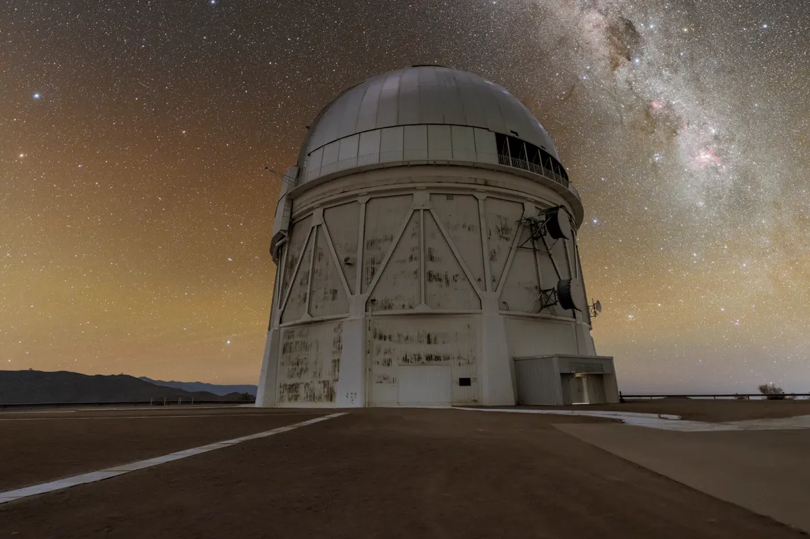
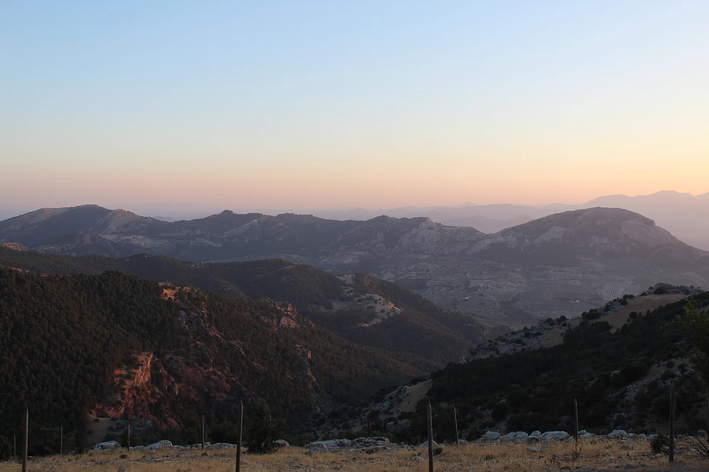

Noches de observación
Todas las noches despejadas salimos a la era, una explanada de piedra donde antes se trillaba el grano, con mantas, una linterna roja por persona y un telescopio de 40 cm. Las sesiones son para quien duerme aquí y para quien sube solo a mirar. No hace falta saber nada: hace falta abrigo y paciencia para que los ojos se acostumbren.

El telescopio y el equipo
El telescopio principal es un Dobson de 406 mm de abertura, un tubo largo sobre una base de madera que se mueve a mano. No tiene motores ni pantallas: lo apunta quien guía la sesión y tú solo tienes que acercar el ojo. Con esa abertura se ven los brazos de la galaxia del Remolino, el color de la nebulosa de Orión y cúmulos globulares como el de Hércules deshechos en miles de estrellas.
De día sacamos un refractor pequeño con filtro solar para ver las manchas del Sol sin riesgo.
- Telescopio principal
- Dobson de 406 mm (16 pulgadas), focal 1.800 mm
- Oculares
- de 30, 13 y 7 mm, de 60 a 260 aumentos
- Para el Sol
- refractor de 80 mm con filtro solar homologado
- Prismáticos
- 10 × 50, uno por persona
- Fotografía
- montura de seguimiento para cámaras y trípodes
- Grupo
- ocho personas como mucho en la era
Cómo es una sesión

Llegada a la era
Quedamos media hora después del fin del crepúsculo. Repartimos mantas y linternas rojas y se apagan las luces de fuera de la casa.
Veinte minutos a oscuras
Es lo que tarda el ojo en adaptarse. Mientras, aprendemos a orientarnos: la Polar, el Carro y la estrella más brillante de esa noche.
Constelaciones a simple vista
Con un puntero verde recorremos el cielo de la temporada y contamos las historias que hay detrás de cada figura.
El telescopio
Entre seis y diez objetos según la noche: un planeta si lo hay, una nebulosa, una galaxia, un cúmulo y alguna estrella doble de colores.
Cielo libre
Al final quien quiere se queda con el telescopio y los prismáticos. Hay chocolate caliente en un termo junto a la puerta.
Calendario lunar
Cada día del mes con la fase de la Luna y las horas de cielo de verdad oscuro sobre el refugio: el Sol más de 18 grados bajo el horizonte y la Luna puesta. Elige un día para ver la noche entera.
| L | M | X | J | V | S | D |
|---|

Luna nueva
Pedir esta nochePróximas lunas nuevas
- Noche del 8 de diciembre de 2026
- Noche del 7 de enero de 2027
- Noche del 6 de febrero de 2027
- Noche del 7 de marzo de 2027
- Noche del 6 de abril de 2027
- Noche del 6 de mayo de 2027
Lluvias de estrellas de 2027
La noche aproximada de cada máximo y cómo estará la Luna, calculada para el refugio. Con Luna llena solo se ven las estrellas fugaces más brillantes.

| Lluvia | Noche del máximo | Radiante | Luna | Cielo oscuro |
|---|---|---|---|---|
| Cuadrántidas | 3 de enero | Boyero, de madrugada | 13 %, menguante | 10 h 10 min |
| Líridas | 22 de abril | Lira, de madrugada | 96 %, menguante | 31 min |
| Eta Acuáridas | 5 de mayo | Acuario, antes del alba | 1 %, luna nueva | 6 h 46 min |
| Perseidas | 12 de agosto | Perseo, toda la noche | 84 %, creciente | 2 h 14 min |
| Oriónidas | 21 de octubre | Orión, de madrugada | 59 %, menguante | 3 h 16 min |
| Leónidas | 17 de noviembre | Leo, de madrugada | 82 %, menguante | 1 h 31 min |
| Gemínidas | 13 de diciembre | Géminis, toda la noche | 100 %, llena | ninguna |
Las fechas de máximo son las habituales de cada lluvia y pueden moverse un día.
Sesiones y precios
Por persona, IVA incluido. Si la noche se nubla, te devolvemos la sesión o la cambiamos por otra. Los niños a partir de seis años, acompañados.
Pedir una sesión- A simple vista, 1 h 30 min18 €
Constelaciones, mitos y orientación con puntero.
- Con telescopio, 2 h35 €
Lo anterior y el Dobson de 40 cm.
- Fotografía nocturna, 3 h60 €
Vía Láctea y paisaje con tu cámara; cuatro personas como mucho.
- El Sol con filtro, 1 h12 €
Manchas y granulación, a mediodía.
- Fin de semana de luna nueva295 €
Dos noches de programa completo y dos cenas, sin el alojamiento.